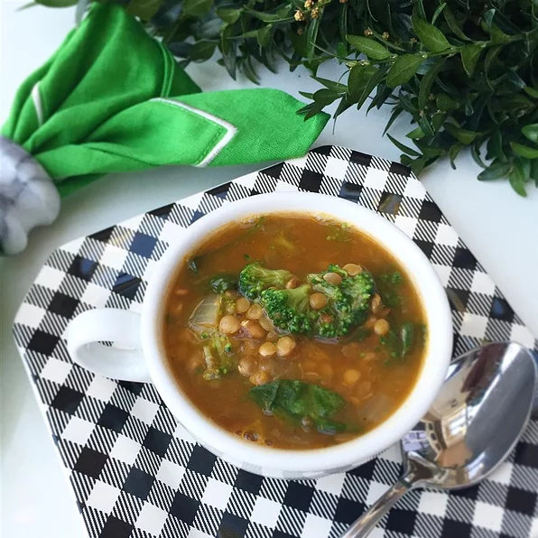

Spinach Lentil Soup

Description
This lentil soup is easy and delicious. Though the recipe calls for carrots, potatoes, and spinach, add any other vegetables you love.
Ingredients
- 4 strips bacon, chopped
- 1 cup shredded carrots
- 1 large onion, chopped
- 1 teaspoon olive oil
- 6 cups chicken broth
- 1 cup salsa
- 16 ounces dried lentils, rinsed
- Bay Leaf
- S & P
- 10 oz spinach
- 1 cup cubed potatoes
Steps
- Place bacon in a large skillet or Dutch oven and cook over medium-high heat, turning occasionally, until evenly browned, about 10 minutes. Stir in carrot, onion, and olive oil cooking until tender, about 5 minutes.
- Cover bacon mixture with chicken broth, water, and salsa; mix in lentils, bay leaf, cumin, rosemary, salt, and pepper. Bring to a boil over high heat; reduce heat to low, cover, and simmer until lentils are tender, 40 to 50 minutes. Stir in spinach and potatoes; simmer until spinach is wilted and potatoes are cooked, 10 to 15 minutes longer.
Return to top